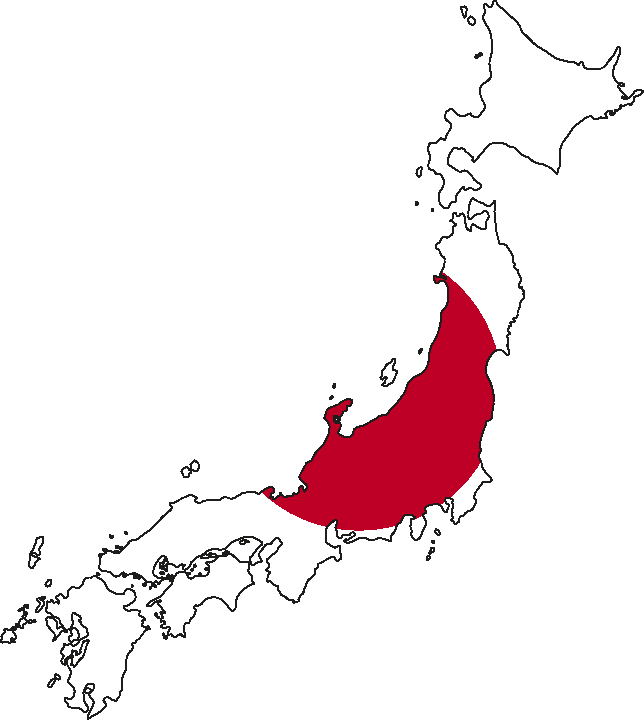

Consider your dates of arrival on Japan tours. Nature has also blessed Japan through cherry blossoms in the Spring and a startling array of colours in the Fall. Garden design is an important Japanese art form that has been refined for more than 1000 years and in Japan, gardens have evolved into a variety of styles with different purposes. Great gardens can be found throughout Japan, particularly, in the former capital, Kyoto. Throughout the year, you can readily find local festivals on a Japan vacation which take place all over the country ranging from celebrating the cherry blossoms to listening to jazz. An important element of Japanese festivals is processions, in which the local shrine's kami (Shinto deity) is carried through the town in mikoshi (palanquins). If you really want to immerse yourself in Japanese culture, consider taking a dip in a hot spring known as an Onsan. Natural hot springs are numerous and highly popular across Japan. Every region of the country has its share of hot springs and resort towns, which come with them. Consider a stay at a traditional Japanese Inn called a Ryokan for a true Japanese experience. Or perhaps attend a sporting event such as Sumo wrestling or a baseball game, two strong passions of the Japanese. Traditional Japanese arts include crafts such as ceramics, textiles, lacquerware, swords and dolls, the tea ceremony, martial arts, calligraphy, origami, onsen and Geisha. And then there is the cuisine – totally distinctive and you don’t have to drink tea made from seaweed but you might be curious enough just to try it once on Japan tours.
|
Trip of Yufuin Floral village, Hells of Beppu Oita This video is taken by Sol Life, If you want to see more videos like this you can visit her Youtube account with this link! |
|  |
| Privacy Policy |
|